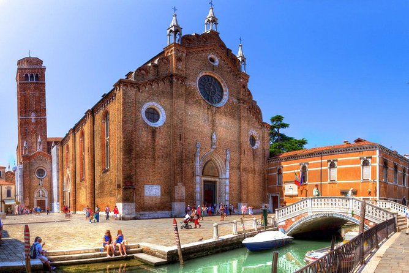
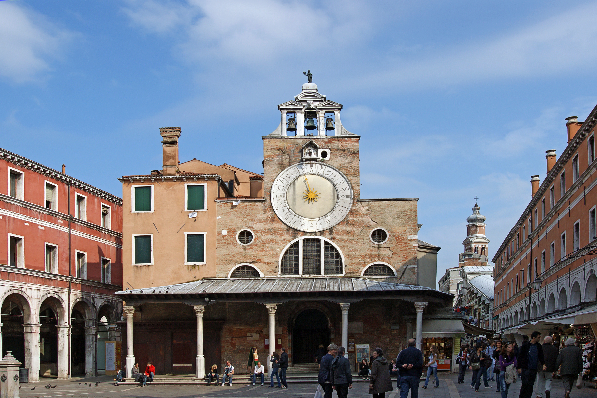
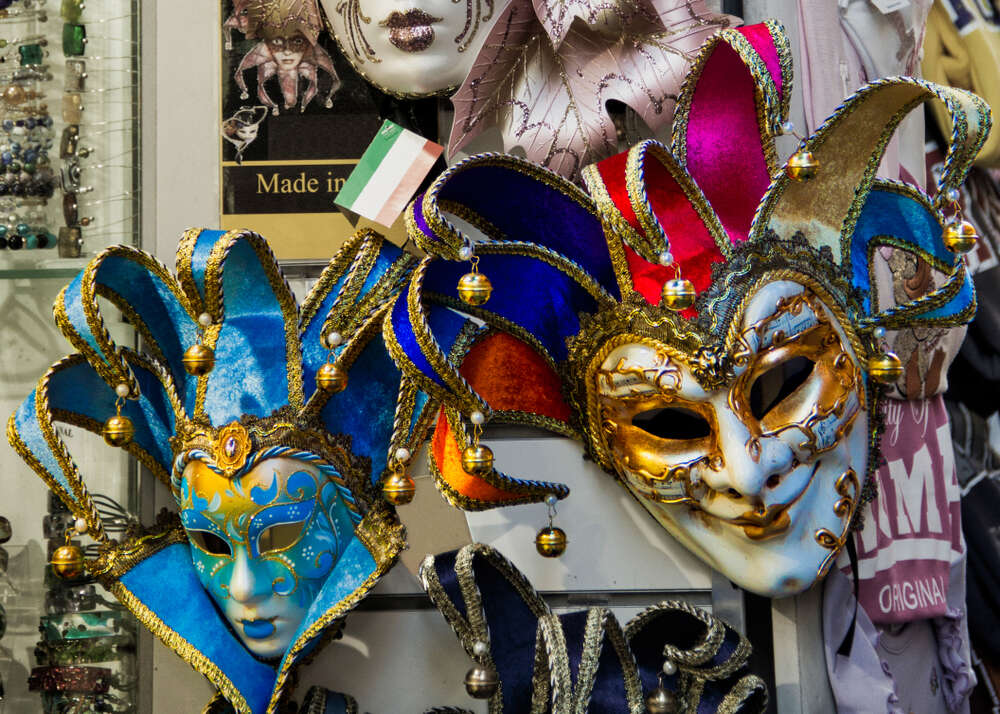
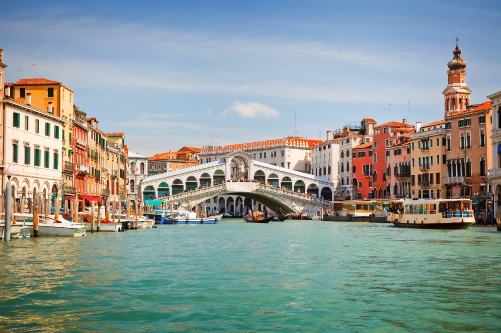

San Polo ist von der Fläche betrachtet der kleinste Sestiere der berühmten Stadt, bietet aber die womöglich meisten und vor allem romantischsten Orte und Bauwerke der einstigen Metropole.
San Polo ist für seine eindrucksvolle Steinbrücke und tollen Shopping-Möglichkeiten bekannt. Sowohl bei Einheimischen als auch bei Besuchern ist der Stadtteil überaus beliebt. Zwar kann er am späten Nachmittag schon einmal überlaufen sein, früher oder am Abend ist er jedoch die perfekte Location für ein echt italienisches Einkaufserlebnis. Erkunden Sie dieses Juwel venezianischer Kultur und gönnen Sie sich ein paar Andenken. Die vielleicht größte Attraktion in San Polo ist die Rialtobrücke. Dieses Bauwerk aus dem Jahr 1591 ist die neueste von mehreren Ausführungen, die bis ins 12. Jahrhundert zurückreichen. Alle haben in der venezianischen Wirtschaft eine wichtige Rolle gespielt. Überqueren Sie die Rialtobrücke über die äußeren Treppen und genießen Sie den Panoramablick auf Venedig über den Canal Grande. Wenn Sie Zeit haben, sollten Sie auch eine Gondelfahrt unter der Brücke hindurch machen, um eine ganze andere Perspektive zu erhalten. Die Kirchen und Museen von San Polo gehören auf jeden Urlaubsplan. Beginnen Sie mit einem Besuch der Kirche San Polo. Nehmen Sie sich Zeit, um die vielen Kunstwerke zu bestaunen, die die Santa Maria Gloriosa dei Frari schmücken. Die Scuola Grande di San Rocco ist zwar keine Kirche, zeigt aber christliche Gemälde von Tintoretto, die denen in den Kirchen Konkurrenz machen.


Der Sestiere ist der älteste Stadtteil Venetiens. Der Name "Polo" lässt sich zurück führen auf San Paolo Apostolo, also den Heiligen Paulus der Apostelgeschichte. Der Legende nach soll der bekehrte Apostel hier an Land gegangen sein, um die Frohe Botschaft unter die Heiden zu bringen. Wer in die Vergangenheit blicken möchte, dem sei der Campo Santo Polo ebenso empfohlen wie der Rialto. Die Rialto-Brücke dürfte den meisten Menschen bekannt sein. Sie bildet eines der Herzstücke dieses kleinen und wundervollen Sestiere. Hinzu kommt der Mercato di Rialto, der einst als Marktplatz das Zentrum des Großreiches Venedig war.
Der Karneval in der versinkenden Stadt ist sicher eine der spektakulärsten Veranstaltungen der Welt. Zwischen Dogen und Palästen tummelten sich hier einst die einsamen Damen der Gesellschaft ebenso wie die abenteuerlustigen Herren - oder andersherum. Noch heute ist der Karneval hier eine große Attraktion, wobei Rialto in San Polo immer im Mittelpunkt der farbenprächtigen Feierlichkeiten steht. Der Zustrom der vermeintlich Schönen und tatsächlich Reichen hat dem Karneval vieles von seinem Zauber genommen. In den ruhigeren Gassen von Polo kann man ihn indes noch immer genießen.


Die Rialtobrücke (italienisch Ponte di Rialto) in Venedig ist eines der bekanntesten Bauwerke der Stadt. Die Brücke führt über den Canal Grande und hat eine Länge von 48 m, eine Breite von 22 m und eine Durchfahrtshöhe von 7,50 m. Die lichte Weite des einzigen Bogens beträgt 28,8 m. Die Gründungen der beiden Widerlager bestehen aus Pfahlrosten mit jeweils 6000 gerammten Holzpfählen zu beiden Seiten.